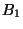
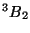
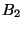
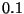

The NWChem multiconfiguration SCF (MCSCF) module can currently perform complete active space SCF (CASSCF) calculations with at most 20 active orbitals and about 500 basis functions. It is planned to extend it to handle 1000+ basis functions.
MCSCF
STATE <string state>
ACTIVE <integer nactive>
ACTELEC <integer nactelec>
MULTIPLICITY <integer multiplicity>
[SYMMETRY <integer symmetry default 1>]
[VECTORS [[input] <string input_file default $file_prefix$.movecs>]
[swap <integer vec1 vec2> ...] \
[output <string output_file default input_file>] \
[lock]
[HESSIAN (exact||onel)]
[MAXITER <integer maxiter default 20>]
[THRESH <real thresh default 1.0e-4>]
[TOL2E <real tol2e default 1.0e-9>]
[LEVEL <real shift default 0.1d0>]
END
Note that the ACTIVE, ACTELEC, and MULTIPLICITY
directives are required. The symmetry and multiplicity may
alternatively be entered using the STATE directive.
The number of orbitals in the CASSCF active space must be specified using the ACTIVE directive.
E.g.,
active 10
The input molecular orbitals (see the vectors directive, Sections 17.6 and 10.5) must be arranged in order
The number of electrons in the CASSCF active space must be specified using the the ACTELEC directive. An error is reported if the number of active electrons and the multiplicity are inconsistent.
The number of closed shells is determined by subtracting the number of active electrons from the total number of electrons (which in turn is derived from the sum of the nuclear charges minus the total system charge).
The spin multiplicity must be specified and is enforced by projection of the determinant wavefunction.
E.g., to obtain a triplet state
multiplicity 3
This species the irreducible representation of the wavefunction as an integer in the range 1--8 using the same numbering of representations as output by the SCF program. Note that only Abelian point groups are supported.
E.g., to specify a  state when using the  group
group
symmetry 3
The electronic state (spatial symmetry and multiplicity) may alternatively be specified using the conventional notation for an electronic state, such as  for a triplet state of  symmetry. This would be accomplished with the input
state 3b2which is equivalent to
symmetry 4 multiplicity 3
Calculations are best started from RHF/ROHF molecular orbitals (see
Section 10), and by default vectors are taken from the
previous MCSCF or SCF calculation. To specify another input file use
the VECTORS directive. Vectors are by default output to the
input file, and may be redirected using the output keyword.
The swap keyword of the VECTORS directive may be
used to reorder orbitals to obtain the correct active space.
See Section 10.5 for an example.
The LOCK keyword allows the user to specify that the ordering
of orbitals will be locked to that of the initial vectors, insofar as
possible. The default is to order by ascending orbital energies within
each orbital space. One application where locking might be desirable
is a calculation where it is necessary to preserve the ordering of a
previous geometry, despite flipping of the orbital energies. For such
a case, the LOCK directive can be used to prevent the SCF
calculation from changing the ordering, even if the orbital energies
change.
Output orbitals of a converged MCSCF calculation are canonicalized as follows:
The MCSCF will use a one-electron approximation to the orbital-orbital
Hessian until some degree of convergence is obtained, whereupon it
will attempt to use the exact orbital-orbital Hessian which makes the
micro iterations more expensive but potentially reduces the total
number of macro iterations. Either choice may be forced throughout
the calculation by specifying the appropriate keyword on the
HESSIAN directive.
E.g., to specify the one-electron approximation throughout
hessian onel
The Hessian (Section 17.7) used in the MCSCF
optimization is by default level shifted by 0.1 until the orbital
gradient norm falls below 0.01, at which point the level shift is
reduced to zero. The initial value of  may be changed using
the LEVEL directive. Increasing the level shift may make
convergence more stable in some instances.
E.g., to set the initial level shift to 0.5
level 0.5
Specific output items can be selectively enabled or disabled using the
print control mechanism (5.6) with the
available print options listed in table(17.9).
|
|